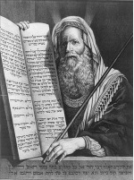

Musa, genelde Yahudi tarihinde en önemli kutsal kitap şahsiyetlerinden biri olarak bilinir. Musa’nın hikâyesinin ana kısmı, Çıkış (Exodus) kitabında anlatılır.

İbrahim’in torunları olan İbranîler, bir kıtlık sırasında İsrail’i terk ederek Yakup’un oğullarından biri olan ve firavundan iltifat gören Yusuf’un yaşadığı yer olan Mısır’a yerleştiler. Zaman geçtikçe ve firavunun Yusuf ile olan dostluğu unutuldukça, İbranîler Mısırlılar’ın kölesi haline geldiler.
Musa, İbranî kölelerin çocuklarının öldürülmesini emreden acımasız bir firavun olan II. Ramses’in hükümdarlığı sırasında Mısır’da, İmran ve Yoşaved’in oğlu olarak doğdu. Yoşaved ilk başlarda Musa’yı saklamayı başarabildiyse de, bunu yapmak sonraları çok zorlaştı. Musa üç aylık olunca, annesi onu bir sepetin içine koydu ve merhametli birinin bulmasını umarak Nil Nehri’ne bıraktı. Musa’yı bir süre sonra firavunun karısı buldu ve ona kendi oğlu gibi baktı.
Musa büyüdü ve sonunda gerçek kökenlerini öğrendi. Bundan kısa bir süre sonra, bir Mısırlı’nın bir İsrailli’yi dövdüğüne şahit olduğunda, tepkisi Mısırlı’yı öldürmek oldu. Böylesi utanç verici bir suçu işlemiş olarak Musa, Mısır’dan kaçmaya ve kırk yıl Sina Yarımadası’nda yaşamaya zorlandı. Bir gün Musa, ateşler içinde olmasına rağmen yanmayan bir çalılık gördü. Yakından bakmak için çalılığa yaklaşınca, Tanrı ona Mısır’a geri dönmesini ve İsrailliler’i Mısır’dan dışarı çıkarmasını emretti.
Musa bunun üzerine Mısır’a döndü ve İbranîler’i serbest bırakması için firavunu ikna etmeye çalıştı. Firavun onu reddetti, bu da Tanrı’nın Mısırlılar’a on felaket göndermesine neden oldu. Onuncu felaket –tüm Mısırlı ailelerin ilk doğan oğlunun ölümü– kırılma noktası oldu ve firavun İsrailoğulları’nı serbest bıraktı. Ancak gitmelerine izin verdikten sonra, onları takip etti. İsrailoğulları Kızıldeniz’in kıyısına geldiğinde, arkadan firavunun ordusu yetişti ve onları kıstırdı. Tanrı, İsrailoğulları’nı kurtarmak için Kızıldeniz’de bir yol açtı. Onların geçmesinin ardından açtığı yolu hemen kapayarak Mısırlılar’ı suda boğdu. Musa denizi geçtikten sonra İbranîler’i, zirvesine tek başına çıkıp, Tanrı’dan On Emir’i alacağı Sina Dağı’na giden çöl yolundan götürdü.
Gerçekten var olup olmadığı tarihsel açıdan tartışmalıysa da, lider ve kanun koyucu olarak Musa, Yahudi tarihinin en başta gelen sembolüdür.
EK BİLGİLER:
1. Bazı kuramlar, Musa’nın aslında İbranî olmadığını, daha ziyade kaçak ve fedakâr bir Mısırlı rahip olduğunu iddia ederler.
2. Yahudiler’in boynuzları olduğu nevinden Yahudi aleyhtârı klişeler, büyük ihtimalle Musa’nın Sina Dağı’ndan indikten sonraki hâline dair bir tasvirin yanlış bir çevirisinden kaynaklanmaktadır. Tanrı’ya bu kadar yakın olmak, iddialara göre, Musa’nın fizikî görüntüsünü değiştirmişti. Ama söylenen, “yüzünden ışıkların fışkırdığı”dır, bazılarının hatalı şekilde inandığı gibi “kafasından boynuzların fışkırdığı” değil.